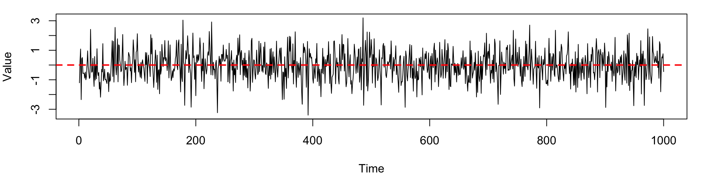
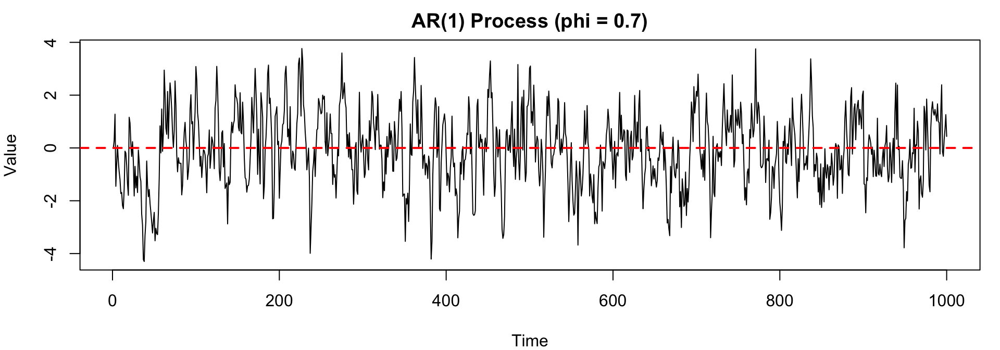
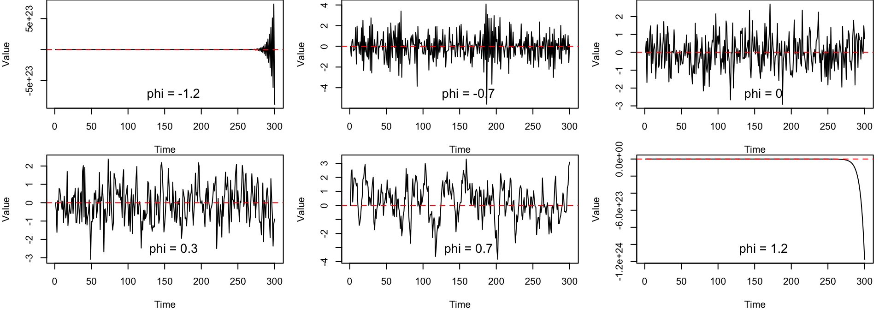
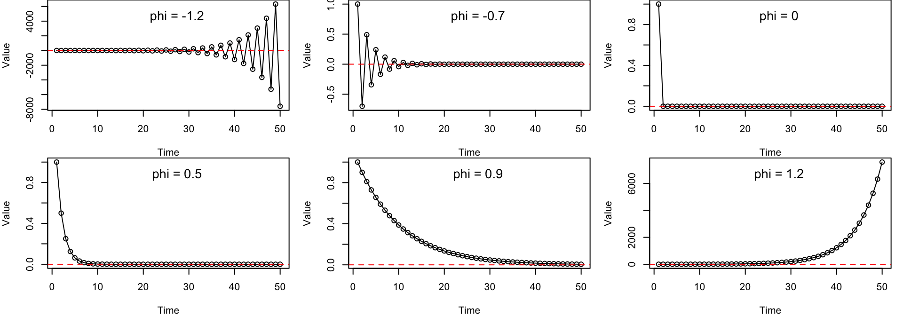
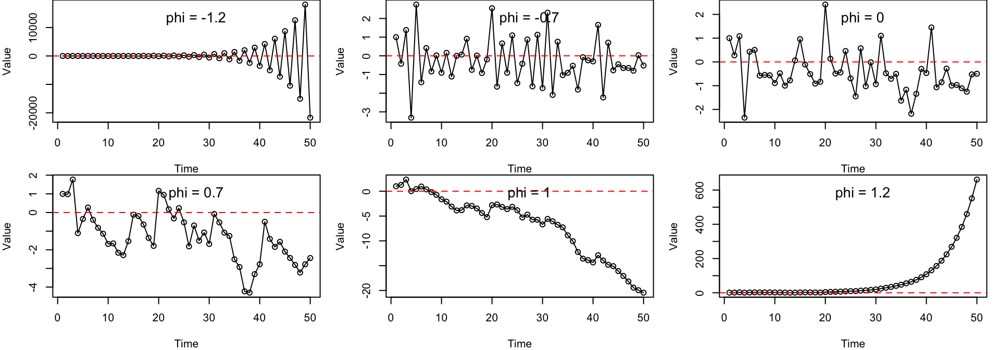
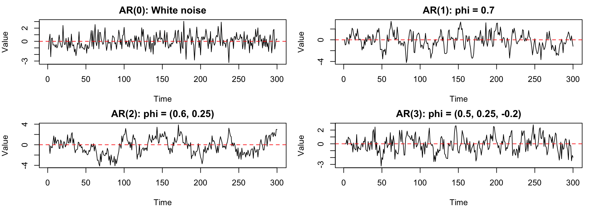
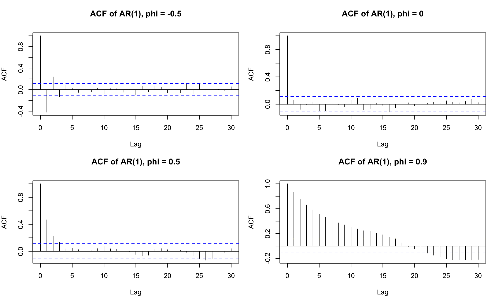
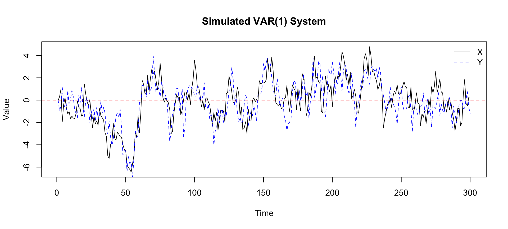
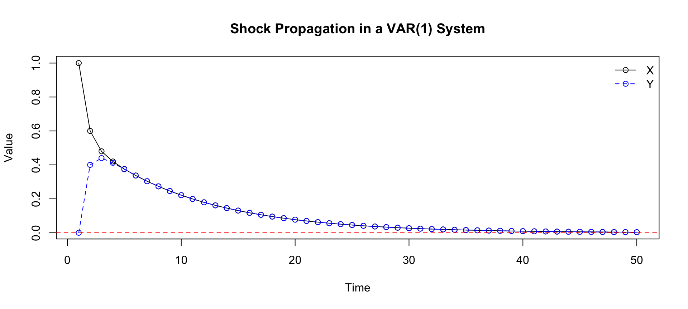

STAT2005 Computer Simulation
Lecture 8 — Time Series Modelling
Sam Wiwatanapataphee (275287a@curtin.edu.au)
30 Apr 2026
Goals today
- Part 1: Motivation and Review of Stochastic Processes
- From Stochastic Models to Time Series
- White Noise Process
- Part 2: Autoregressive (AR) Processes
- AR(1) Model
- Behaviour via \(\phi\)
- Memory and Shock Propagation
- Mean Reversion
- AR(p) Model
- Stationarity Condition for AR(p)
- Autocorrelation Function (ACF)
- Part 3: Vector Autoregressive (VAR) Processes
- Motivation for VAR Models
- VAR(1) Model
- Shock Propogation in VAR(1)
- Cross-Correlation Function (CCF)
- Part 4: Other Time Series Models (Optional)
- Moving Average (MA) Processes
- ARMA and ARIMA Models
- Nonlinear and Regime-Switching Models
- Part 5: Case Study - Traffic Flow Simulation
Part 1: Motivation and Review of Stochastic Processes
From Stochastic Models to Time Series
Previously, we introduced stochastic processes.
A stochastic process is
A collection of random variables indexed by time
\[ \{X_t : t \in T\} \]
where
- \(t\): time index
- \(T\): time index set (discrete or continuous)
- \(X_t\): random variable at time \(t\).
- \(X_t \in S\): state space (discrete or continuous)
Anatomy of a Stochastic Process
Index set
State space
Dependence structure
Dependence structure is the key aspect that distinguishes different types of stochastic processes and determines how the future states of the process are influenced by its past states.
Dependence Structure
The dependence structure can take various forms, such as:
Independence
The future state is independent of the past states.
E.g., white noise processes, where \(X_t\) is an i.i.d random variable with mean zero and constant variance.
Markov dependence (memoryless)
The future state depends only on the current state, not on the past states.
E.g., Markov chains, where \(P(X_{t+1} | X_t) = P(X_{t+1} | X_t, X_{t-1}, ...)\).
Autoregressive dependence
The future state depends on a linear combination of past states.
E.g., AR(p) models in time series analysis, where \(X_t = \phi_1 X_{t-1} + \phi_2 X_{t-2} + ... + \phi_p X_{t-p} + \epsilon_t\).
Long-range dependence
The future state depends on a long history of past states.
E.g., fractional Brownian motion, moving average processes, or certain types of time series with long memory.
Dependence Structure - What We Haven’t Explored Yet
Independence
The future state is independent of the past states.
E.g., white noise processes, where \(X_t\) is an i.i.d. random variable with mean zero and constant variance.
Autoregressive dependence
The future state depends on a linear combination of past states.
E.g., AR(\(p\)) models in time series analysis, where \(X_t = \phi_1 X_{t-1} + \phi_2 X_{t-2} + ... + \phi_p X_{t-p} + \epsilon_t\).
Long-range dependence
The future state depends on a long history of past states.
E.g., fractional Brownian motion, moving average processes, or certain types of time series with long memory.
You can think of this lecture as an extension of our previous discussion on stochastic processes, where we will explore specific types of dependence structures that are commonly observed in real-world data, particularly in time series analysis.
Dependence Structure - Our main forcus today
Autoregressive dependence
The future state depends on a linear combination of past states.
E.g., AR(p) models in time series analysis, where \(X_t = \phi_1 X_{t-1} + \phi_2 X_{t-2} + ... + \phi_p X_{t-p} + \epsilon_t\).
Today, we focus on autoregressive dependence, which is fundamental in time series analysis.
Time series are stochastic processes indexed by time, but with a specific focus on the temporal dependence structure1 of the data.
We ask:
- Does \(X_{t+1}\) depend on \(X_t\), or the entire history, or nothing?
- If the future depends on the past, how does it look like?
- Does the process have a memory? If so, how long is the memory?
- How do systems evolve dynamically?
Examples of systems that have autoregressive dependence include weather patterns, stock prices, population dynamics, economic indicators, and traffic flow.
Independent Process: White Noise
Before we dive into autoregressive processes, let’s start with the simplest case of a stochastic process with independent randomness.
White noise is a stochastic process indexed by time, denoted as
\[ \{ \varepsilon_t : t = 1, 2, \dots \}, \quad \varepsilon_t \sim \text{i.i.d. } (0, \sigma^2) \]
where \(\varepsilon_t\) represents the value of the process at time \(t\), and \(\sigma^2\) is the variance.
It is characterised by the following properties:
\[ \mathbb{E}(\varepsilon_t) = 0, \quad \text{Var}(\varepsilon_t) = \sigma^2, \quad \text{Cov}(\varepsilon_t, \varepsilon_s) = 0 \text{ for } t \neq s \]
Pure randomness
No structure
No predictability
Serves as a baseline model for time series analysis.
White noise can be generated from any distribution (normal, uniform, t-distribution, etc.), but the most common choice is the Gaussian distribution, making it a Gaussian white noise process.
This choice is often made for mathematical convenience and because many aggregated random effects tend to produce approximately Gaussian behaviour.
Example: Simulate Gaussian white noise process with mean zero and variance one \(\varepsilon_t \sim \text{i.i.d. } N(0, 1)\)
The plot shows no visible trend, no persistence clusters, and values fluctuating randomly around zero, which isconsistent with the properties of white noise.
Even in pure white noise, the human eye may perceive short runs or apparent patterns. These are artefacts of randomness rather than evidence of structure.
Part 2: Autoregressive (AR) Processes
What if the present depends on the past?
AR(1) Model
The autoregressive model of order 1 or AR(1) model is the simplest time series model with temporal dependence.
It captures essential features of many real-world time series, including
Persistence
Shock propagation
Mean reversion
- It is used as a building block for more complex models and serves as a fundamental example of how past values can influence future values in a time series.
An AR(1) is a stochastic process indexed by time, defined by the recursive relation
\[ X_t = \phi X_{t-1} + \varepsilon_t, \quad t = 1,2,\dots \]
where:
- \(\phi\) is a constant parameter controlling the strength of dependence,
- \(\varepsilon_t\) is a white noise process with mean zero and variance \(\sigma^2\). In some textbooks, this is referred to as a random shock.
The AR(1) model introduces dependence through a simple feedback mechanism, where the present is a noisy version of the past.
Example: Simulate an AR(1) process with (\(\phi = 0.7\)):
\[ X_t = 0.7 X_{t-1} + \varepsilon_t, \quad \varepsilon_t \sim \text{i.i.d. } N(0,1) \]
R Version
set.seed(1234)
n <- 1000; phi <- 0.7
epsilon <- rnorm(n, mean = 0, sd = 1)
X <- numeric(n)
X[1] <- 0 # initial value
for (t in 2:n) {
X[t] <- phi * X[t-1] + epsilon[t]
}
par(mar=c(4, 4, 2, 1))
plot(X, type = "l", main = "AR(1) Process (phi = 0.7)",
xlab = "Time", ylab = "Value")
abline(h = 0, col = "red", lty = 2, lwd = 2)
Python Version
import numpy as np
import matplotlib.pyplot as plt
np.random.seed(1234)
n = 1000
phi = 0.7
epsilon = np.random.normal(0, 1, n)
X = np.zeros(n)
for t in range(1, n):
X[t] = phi * X[t-1] + epsilon[t]
plt.plot(X, color='blue')
plt.axhline(0, color='red', linestyle='--', linewidth=2)
plt.title('AR(1) Process (phi = 0.7)')
plt.xlabel('Time')
plt.ylabel('Value')
plt.show()- values exhibit persistence, tending to stay above or below zero for periods of time,
- shocks do not disappear immediately, but instead propagate gradually,
- the series appears smoother (than white noise), with visible structure over time.
Behaviour via \(\phi\)
In the AR(1) model, different choices of \(\phi\) produce very different time series behaviour.
Example: Simulate four AR(1) processes using \(\phi = [-1.2,\; -0.7,\; 0,\; 0.3,\; 0.7,\; 1.2].\)
Each process is driven by Gaussian white noise, \(\varepsilon_t \sim \text{i.i.d. } N(0,1).\)
set.seed(1234)
n <- 300
phis <- c(-1.2, -0.7, 0, 0.3, 0.7, 1.2)
simulate_ar1 <- function(phi, n) {
epsilon <- rnorm(n, mean = 0, sd = 1)
X <- numeric(n)
X[1] <- 0
for (t in 2:n) {
X[t] <- phi * X[t - 1] + epsilon[t]
}
return(X)
}
par(mfrow = c(2, 3), mar = c(4, 4, 0, 1))
for (phi in phis) {
X <- simulate_ar1(phi, n)
plot(X, type = "l", xlab = "Time", ylab = "Value")
abline(h = 0, col = "red", lty = 2)
legend("bottom", legend = paste("phi =", round(phi, 2)), bty = "n", cex = 1.3)
}Python Version
import numpy as np
import matplotlib.pyplot as plt
np.random.seed(1234)
n = 300
phis = [-1.2, -0.7, 0, 0.3, 0.7, 1.2]
def simulate_ar1(phi, n):
epsilon = np.random.normal(0, 1, n)
X = np.zeros(n)
for t in range(1, n):
X[t] = phi * X[t - 1] + epsilon[t]
return X
fig, axes = plt.subplots(2, 3, figsize=(10, 9))
for ax, phi in zip(axes.flatten(), phis):
X = simulate_ar1(phi, n)
ax.plot(X)
ax.axhline(0, color="red", linestyle="--")
ax.set_title(f"AR(1), phi = {phi}")
ax.set_xlabel("Time")
ax.set_ylabel("Value")
plt.tight_layout()
plt.show()
| Value of \(\phi\) | Behaviour |
|---|---|
| \(|\phi| \geq 1\) | Non-stationary, explosive |
| \(\phi < 0\) | Oscillation |
| \(\phi = 0\) | White noise |
| \(0 < \phi < 0.5\) | Low to moderate persistence |
| \(0.5 \leq \phi < 0.9\) | Moderate to high persistence |
| \(0.9 \leq \phi < 1\) | High persistence, close to a unit root |
Memory and Shock Propagation
The AR(1) process has a memory that depends on the value of \(\phi\).
Proof: Starting from the AR(1) definition at time \(t+1,\)
\[ X_{t+1} = \phi X_t + \varepsilon_{t+1}. \]
Substituting recursively, we have
\[ \begin{aligned} X_{t+2} &= \phi X_{t+1} + \varepsilon_{t+2} \\ &= \phi (\phi X_t + \varepsilon_{t+1}) + \varepsilon_{t+2} \\ X_{t+2} &= \phi^2 X_t + \phi \varepsilon_{t+1} + \varepsilon_{t+2} \end{aligned} \]
At time \(t+3\),
\[ \begin{aligned} X_{t+3} &= \phi X_{t+2} + \varepsilon_{t+3} \\ &= \phi (\phi^2 X_t + \phi \varepsilon_{t+1} + \varepsilon_{t+2}) + \varepsilon_{t+3} \\ X_{t+3} &= \phi^3 X_t + \phi^2 \varepsilon_{t+1} + \phi \varepsilon_{t+2} + \varepsilon_{t+3} \end{aligned} \]
At time \(t+k\),
\[ \begin{aligned} X_{t+k} &= \phi X_{t+k-1} + \varepsilon_{t+k} \\ &= \phi (\phi^{k-1} X_t + \phi^{k-2} \varepsilon_{t+1} + ... + \phi \varepsilon_{t+k-2} + \varepsilon_{t+k-1}) + \varepsilon_{t+k} \\ X_{t+k} &= \phi^k X_t + \phi^{k-1} \varepsilon_{t+1} + \phi^{k-2} \varepsilon_{t+2} + ... + \phi \varepsilon_{t+k-1} + \varepsilon_{t+k} \end{aligned} \]
This shows that \(X_{t+k}\) depends on the initial value \(X_t\) and all the shocks \(\varepsilon_{t+1}, \varepsilon_{t+2}, ..., \varepsilon_{t+k}\), with weights that decay geometrically as \(\phi^k\).
Example: Consider a shock of size 1 at time \(t=1\), and all future shocks are set to zero, plot the propagation of this shock for \(\phi = [-1.2, -0.7, 0, 0.5, 0.9, 1.2]\).
Essentially, we plot the deterministic part of the AR(1) process, which is given by \(X_{t+k} = \phi^k X_t\) for \(t > 1\).
set.seed(1234)
n <- 50
phis <- c(-1.2, -0.7, 0, 0.5, 0.9, 1.2)
simulate_shock <- function(phi, n) {
X <- numeric(n)
X[1] <- 1 # initial shock
for (t in 2:n) {
X[t] <- phi * X[t-1] # deterministic part, no new noise
}
return(X)
}
par(mfrow = c(2, 3), mar = c(4, 4, 0, 1))
for (phi in phis) {
X <- simulate_shock(phi, n)
plot(X, type = "o", xlab = "Time", ylab = "Value")
abline(h = 0, col = "red", lty = 2)
legend("top", legend = paste("phi =", round(phi, 2)), bty = "n", cex = 1.3)
}Python Version
import numpy as np
import matplotlib.pyplot as plt
np.random.seed(1234)
n = 50
phis = [-1.2, -0.7, 0, 0.5, 0.9, 1.2]
def simulate_shock(phi, n):
X = np.zeros(n)
X[0] = 1 # initial shock
for t in range(1, n):
X[t] = phi * X[t-1] # no new noise
return X
fig, axes = plt.subplots(2, 3, figsize=(15, 6))
for ax, phi in zip(axes.flatten(), phis):
X = simulate_shock(phi, n)
ax.plot(X, marker='o')
ax.axhline(0, color="red", linestyle="--")
ax.set_title(f"Shock propagation, phi = {phi}")
ax.set_xlabel("Time")
ax.set_ylabel("Value")
plt.tight_layout()
plt.show()
| Value of \(\phi\) | Behaviour | Interpretation |
|---|---|---|
| \(|\phi| \geq 1\) | Non-stationary, explosive | Shocks grow over time |
| \(\phi < 0\) | Oscillation | Alternating behaviour |
| \(\phi = 0\) | White noise | No memory, shocks do not persist |
| \(0 < \phi < 0.5\) | Low to moderate persistence | Short memory, faster decay of shocks |
| \(0.5 \leq \phi < 0.9\) | Moderate to high persistence | Long memory, slower decay of shocks |
| \(0.9 \leq \phi < 1\) | High persistence, close to a unit root | Very long memory, shocks persist for a long time |
Mean Reversion
Mean reversion refers to the tendency of the process to drift back toward its long-run average over time.
Example: Consider a shock of size 1 at time \(t=1\), simulate and plot AR(1) processes with \(\phi = [-1.2, -0.7, 0, 0.7, 1, 1.2]\).
set.seed(1234)
n <- 50
epsilon <- rnorm(n, mean = 0, sd = 1)
phis <- c(-1.2, -0.7, 0, 0.7, 1, 1.2)
simulate_shock <- function(phi, n) {
X <- numeric(n)
X[1] <- 1 # initial shock
for (t in 2:n) {
X[t] <- phi * X[t-1] + epsilon[t]
}
return(X)
}
par(mfrow = c(2, 3), mar = c(4, 4, 0, 1))
for (phi in phis) {
X <- simulate_shock(phi, n)
plot(X, type = "o", xlab = "Time", ylab = "Value")
abline(h = 0, col = "red", lty = 2)
legend("top", legend = paste("phi =", round(phi, 2)), bty = "n", cex = 1.3)
}Python Version
import numpy as np
import matplotlib.pyplot as plt
np.random.seed(1234)
n = 50
epsilon = np.random.normal(0, 1, n)
phis = [-1.2, -0.7, 0, 0.7, 1, 1.2]
def simulate_shock(phi, n):
X = np.zeros(n)
X[0] = 1 # initial shock
for t in range(1, n):
X[t] = phi * X[t-1] + epsilon[t]
return X
fig, axes = plt.subplots(2, 3, figsize=(15, 6))
for ax, phi in zip(axes.flatten(), phis):
X = simulate_shock(phi, n)
ax.plot(X, marker='o')
ax.axhline(0, color="red", linestyle="--")
ax.set_title(f"Shock propagation, phi = {phi}")
ax.set_xlabel("Time")
ax.set_ylabel("Value")
plt.tight_layout()
plt.show()
| Value of \(\phi\) | Mean Reversion Behaviour | |
|---|---|---|
| \(|\phi| < 1\) | Mean reversion, deviations decay over time | |
| \(\phi = 1\) | No mean reversion, random walk behaviour | |
| \(|\phi| > 1\) | Explosive behaviour, deviations grow over time |
For AR(1) model, \(\phi\) controls the strength of mean reversion, the persistence of shocks, and the overall stability of the process.
AR(\(p\)) Model
The AR(1) model can be extended to include dependence on multiple past values, leading to the autoregressive model of order \(p\) or AR(\(p\)) model.
The AR(\(p\)) model is defined as
\[ X_t = \phi_1 X_{t-1} + \cdots + \phi_p X_{t-p} + \varepsilon_t = \sum_{j=1}^p \phi_j X_{t-j} + \varepsilon_t, \]
where \(\phi_1, \dots, \phi_p\) are parameters controlling the influence of each lag.
The AR(\(p\)) model can capture richer temporal behaviour because the present value may depend on several previous values, not just the most recent one.
Comparison with White Noise and AR(1)
| Model | \(X_t\) Definition | Dependence Structure | Shock Propagation | Structure |
|---|---|---|---|---|
| White Noise | \(\varepsilon_t\) | i.i.d | None | None |
| AR(1) | \(\phi X_{t-1} + \varepsilon_t\) | Dependence on 1 lag | Decays at rate \(\phi^k\) | Dynamic |
| AR(\(p\)) | \(\sum_{j=1}^p \phi_j X_{t-j} + \varepsilon_t\) | Dependence on \(p\) lags | Depends on \(\phi_j\) | Complex |
Stationarity Condition for AR(\(p\))
Given the AR(\(p\)) model with parameters \(\Phi = [\phi_1, \dots, \phi_p]\),the AR(\(p\)) process is stationary if the roots of the characteristic polynomial
\[ \Phi(z) = 1 - \phi_1 z - \phi_2 z^2 - ... - \phi_p z^p \]
lie outside the unit circle in the complex plane, i.e.
\[ |z_i| > 1 \quad \text{for all roots } z_i \text{ of } \Phi(z) = 0. \]
This is the standard Box–Jenkins/Brockwell–Davis condition and guarantees finite variance, time‑invariant moments, and exponentially (or damped‑oscillatory) decaying dependence.
Example: Given the AR(2) model, \(X_t = 0.9 X_{t-1} - 0.15 X_{t-2} + \varepsilon_t\), is this process stationary?
The characteristic polynomial is
\[ \Phi(z) = 1 - 0.9 z + 0.15 z^2 \]
Setting \(\Phi(z) = 0\) and calculating the roots,
\[ z = \frac{0.9 \pm \sqrt{0.9^2 - 4 \cdot 0.15}}{2 \cdot 0.15} \quad \rightarrow \quad z_1 = 1.4725, \quad z_2 = 4.5275 \]
\(\therefore\) Since both roots satisfy \(|z_i| > 1\), the AR(2) process is stationary.
Example: Simulate AR(\(p\)) processes with different parameters: \(p = 0, 1, 2, 3\) and various \(\phi\) values.
set.seed(1234)
n <- 300
simulate_ar <- function(phi, n) {
p <- length(phi)
epsilon <- rnorm(n, 0, 1)
X <- numeric(n)
for (t in (p + 1):n) {
X[t] <- sum(phi * X[(t - 1):(t - p)]) + epsilon[t]
}
return(X)
}
models <- list(
"AR(0): White noise" = rnorm(n, 0, 1),
"AR(1): phi = 0.7" = simulate_ar(c(0.7), n),
"AR(2): phi = (0.6, 0.25)" = simulate_ar(c(0.6, 0.25), n),
"AR(3): phi = (0.5, 0.25, -0.2)" = simulate_ar(c(0.5, 0.25, -0.2), n)
)Python Version
import numpy as np
import matplotlib.pyplot as plt
np.random.seed(1234)
n = 300
def simulate_ar(phi, n):
p = len(phi)
epsilon = np.random.normal(0, 1, n)
X = np.zeros(n)
for t in range(p, n):
X[t] = sum(phi[j] * X[t - j - 1] for j in range(p)) + epsilon[t]
return X
models = {
"AR(0): White noise": np.random.normal(0, 1, n),
"AR(1): phi = 0.7": simulate_ar([0.7], n),
"AR(2): phi = (0.6, 0.25)": simulate_ar([0.6, 0.25], n),
"AR(3): phi = (0.5, 0.25, -0.2)": simulate_ar([0.5, 0.25, -0.2], n),
}
fig, axes = plt.subplots(2, 2, figsize=(10, 6))
for ax, (name, series) in zip(axes.flatten(), models.items()):
ax.plot(series)
ax.axhline(0, linestyle="--", color="red")
ax.set_title(name)
ax.set_xlabel("Time")
ax.set_ylabel("Value")
plt.tight_layout()
plt.show()
| Model | Example Coefficients | Behaviour |
|---|---|---|
| AR(0) | None | White noise (no memory) |
| AR(1) | \(\phi = 0.7\) | Moderate persistence |
| AR(2) | \(\phi = (0.6, 0.25)\) | Stronger persistence |
| AR(3) | \(\phi = (0.5, 0.25, -0.2)\) | Mixed lag effects |
Autocorrelation Function (ACF)
So far, we have described temporal dependence visually and intuitively: some processes show persistence, some oscillate, and some behave almost like white noise.
To measure this dependence more systematically, we use the autocorrelation function, or ACF.
For a time series \(X_t\), the lag-\(k\) autocorrelation is
\[ \rho_k = \text{Corr}(X_t, X_{t-k}). \]
For a stationary AR(1) process,
\[ X_t = \phi X_{t-1} + \varepsilon_t, \quad |\phi| < 1, \]
the theoretical ACF is
\[ \rho_k = \phi^k. \]
This is the same geometric decay pattern we observed in shock propagation.
Therefore, the value of \(\phi\) in an AR(1) process also determines the shape of the ACF.
| Value of \(\phi\) | ACF behaviour | Interpretation |
|---|---|---|
| \(\phi = 0\) | zero after lag 0 | white noise |
| \(0 < \phi < 1\) | positive decay | persistence |
| \(\phi \approx 1\) | slow decay | long memory |
| \(\phi < 0\) | alternating signs | oscillation |
Example: Compare the ACF of AR(1) processes with \(\phi = [-0.5, 0, 0.5, 0.9]\).
set.seed(1234)
n <- 300
phis <- c(-0.5, 0, 0.5, 0.9)
simulate_ar1 <- function(phi, n) {
epsilon <- rnorm(n, mean = 0, sd = 1)
X <- numeric(n)
X[1] <- 0
for (t in 2:n) {
X[t] <- phi * X[t - 1] + epsilon[t]
}
return(X)
}
par(mfrow = c(2, 2), mar = c(4, 4, 4, 1))
for (phi in phis) {
X <- simulate_ar1(phi, n)
acf(X, main = paste("ACF of AR(1), phi =", phi), lag.max = 30)
}Python Version
import numpy as np
import matplotlib.pyplot as plt
from statsmodels.graphics.tsaplots import plot_acf
np.random.seed(1234)
n = 300
phis = [-0.5, 0, 0.5, 0.9]
def simulate_ar1(phi, n):
epsilon = np.random.normal(0, 1, n)
X = np.zeros(n)
for t in range(1, n):
X[t] = phi * X[t - 1] + epsilon[t]
return X
fig, axes = plt.subplots(2, 2, figsize=(10, 6))
for ax, phi in zip(axes.flatten(), phis):
X = simulate_ar1(phi, n)
plot_acf(X, lags=30, ax=ax)
ax.set_title(f"ACF of AR(1), phi = {phi}")
plt.tight_layout()
plt.show()
(Aside) Have you seen ACF before?
- In Regression analysis of time series data ACF of residuals is one of a crucial diagnostic plots to check the validity of the OLS assumptions, independence of errors.
Part 3: Vector Autoregression (VAR) Model
Motivation for VAR
So far, the AR(1) and AR(\(p\)) models have been useful for understanding the dynamics of a single time series.
In real-world systems, we have multiple time series that may influence each other.
In such systems, the future value of one variable may depend not only on its own past, but also on the past values of other variables.
For example:
Energy demand depend on
- past energy demand
- past temperature
- past electricity prices
Stock returns depend on
- past stock returns
- past interest rates
- past economic indicators
Queue lengths depend on
- past queue lengths
- past arrival rates
- past service rates
Traffic flow depend on
- past traffic flow
- past weather conditions
- past traffic incidents
Disease spread depend on
- past infection rates
- past mobility patterns
- past public health interventions
Economic growth depend on
- past economic growth
- past investment levels
- past government policies
VAR(1) Model
A simple two-variable VAR(1) model is given by
\[ \begin{aligned} X_t &= a_{11}X_{t-1} + a_{12}Y_{t-1} + \varepsilon_{1,t}, \\ Y_t &= a_{21}X_{t-1} + a_{22}Y_{t-1} + \varepsilon_{2,t}. \end{aligned} \]
or in matrix form,
\[ \begin{aligned} \begin{bmatrix} X_t \\ Y_t \end{bmatrix} &= \begin{bmatrix} a_{11} & a_{12} \\ a_{21} & a_{22} \end{bmatrix} \begin{bmatrix} X_{t-1} \\ Y_{t-1} \end{bmatrix} + \begin{bmatrix} \varepsilon_{1,t} \\ \varepsilon_{2,t} \end{bmatrix} \\[0.5em] \mathbf{X}_t &= \Phi \mathbf{X}_{t-1} + \boldsymbol{\varepsilon}_t \end{aligned} \]
Here:
- \(X_t\) and \(Y_t\) are two time series observed over time,
- The diagonal elements, \(a_{11}\) and \(a_{22}\), measure each variable’s dependence on its own past,
- The off-diagonal elements, \(a_{12}\) and \(a_{21}\), measure cross-variable dependence,
- \(\varepsilon_{1,t}\) and \(\varepsilon_{2,t}\) are white noise shocks.
For a VAR(1) model to be stable (covariance stationary), the eigenvalues of the coefficient matrix must lie inside the unit circle:
\[ \rho(\Phi) < 1, \]
where \(\rho(\Phi)\) is the spectral radius (largest absolute eigenvalue) of \(\Phi\) calculated as:
\[ \rho(\Phi) = \max_i \{ |\lambda_i| : \lambda \text{ is an eigenvalue of } \Phi \}. \]
Example: Simulate a simple VAR(1) system:
\[ \begin{aligned} X_t &= 0.6X_{t-1} + 0.3Y_{t-1} + \varepsilon_{1,t}, \\ Y_t &= 0.4X_{t-1} + 0.5Y_{t-1} + \varepsilon_{2,t}. \end{aligned} \]
Here, both variables depend on their own past and on each other’s past.
- Check the stability condition for this VAR(1) model.
- Simulate the VAR(1) process and plot the time series.
- To check the stability condition, we need to calculate the eigenvalues of the coefficient matrix:
\[ \Phi = \begin{bmatrix} 0.6 & 0.3 \\ 0.4 & 0.5 \end{bmatrix}. \]
The eigenvalues \(\lambda\) of \(\Phi\) are found by solving:
\[ \begin{aligned} \text{det}(\Phi - \lambda I) &= 0 \\ \text{det}\left(\begin{bmatrix} 0.6 - \lambda & 0.3 \\ 0.4 & 0.5 - \lambda \end{bmatrix}\right) &= 0 \\ (0.6 - \lambda)(0.5 - \lambda) - (0.3)(0.4) &= 0 \\ \lambda^2 - 1.1\lambda + 0.18 &= 0 \\ \lambda_1 &= 0.9, \quad \lambda_2 = 0.2 \end{aligned} \]
Check for stability: \[ \rho(\Phi) = \max(|0.9|, |0.2|) = 0.9 < 1 \]
\(\therefore\) The VAR(1) model is stable.
- To simulate the VAR(1) process, we can use the following code:
set.seed(1234)
n <- 300
X <- numeric(n)
Y <- numeric(n)
epsilon_x <- rnorm(n, mean = 0, sd = 1)
epsilon_y <- rnorm(n, mean = 0, sd = 1)
X[1] <- 0
Y[1] <- 0
for (t in 2:n) {
X[t] <- 0.6 * X[t - 1] + 0.3 * Y[t - 1] + epsilon_x[t]
Y[t] <- 0.4 * X[t - 1] + 0.5 * Y[t - 1] + epsilon_y[t]
}
plot(X, type = "l", main = "Simulated VAR(1) System", xlab = "Time", ylab = "Value")
lines(Y, lty = 2, col = "blue")
abline(h = 0, col = "red", lty = 2)
legend("topright", legend = c("X", "Y"), lty = c(1, 2),
col = c("black", "blue"), bty = "n")Python Version
import numpy as np
import matplotlib.pyplot as plt
np.random.seed(1234)
n = 300
X = np.zeros(n)
Y = np.zeros(n)
epsilon_x = np.random.normal(0, 1, n)
epsilon_y = np.random.normal(0, 1, n)
for t in range(1, n):
X[t] = 0.6 * X[t - 1] + 0.3 * Y[t - 1] + epsilon_x[t]
Y[t] = 0.4 * X[t - 1] + 0.5 * Y[t - 1] + epsilon_y[t]
plt.plot(X, label="X")
plt.plot(Y, linestyle="--", label="Y")
plt.axhline(0, color="red", linestyle="--")
plt.title("Simulated VAR(1) System")
plt.xlabel("Time")
plt.ylabel("Value")
plt.legend()
plt.show()
- \(X_t\) depends on past \(X\) and past \(Y\),
- \(Y_t\) depends on past \(Y\) and past \(X\),
- shocks to one variable can influence the other variable later,
- the two series move as an interacting system rather than as isolated processes.
Shock Propagation in VAR(1)
Example: Consider a one-time shock of size 1 to \(X\) at time \(t=1\), and all future shocks are zero. Simulate the VAR(1) system with
\[ \Phi = \begin{bmatrix} 0.6 & 0.3 \\ 0.4 & 0.5 \end{bmatrix} \]
and plot the time series to see how the shock propagates through both \(X\) and \(Y\) over time.
n <- 50
X <- numeric(n)
Y <- numeric(n)
X[1] <- 1 # initial shock to X
Y[1] <- 0
for (t in 2:n) {
X[t] <- 0.6 * X[t - 1] + 0.3 * Y[t - 1]
Y[t] <- 0.4 * X[t - 1] + 0.5 * Y[t - 1]
}
plot(X, type = "o", main = "Shock Propagation in a VAR(1) System",
xlab = "Time", ylab = "Value")
lines(Y, type = "o", lty = 2, col = "blue")
abline(h = 0, col = "red", lty = 2)
legend("topright", legend = c("X", "Y"), lty = c(1, 2),
pch = c(1, 1), col = c("black", "blue"), bty = "n")Python Version
import numpy as np
import matplotlib.pyplot as plt
n = 50
X = np.zeros(n)
Y = np.zeros(n)
X[0] = 1 # initial shock to X
Y[0] = 0
for t in range(1, n):
X[t] = 0.6 * X[t - 1] + 0.3 * Y[t - 1]
Y[t] = 0.4 * X[t - 1] + 0.5 * Y[t - 1]
plt.plot(X, marker="o", label="X")
plt.plot(Y, marker="o", linestyle="--", label="Y")
plt.axhline(0, color="red", linestyle="--")
plt.title("Shock Propagation in a VAR(1) System")
plt.xlabel("Time")
plt.ylabel("Value")
plt.legend()
plt.show()
- The initial shock to \(X\) causes \(X\) to jump to 1 at time \(t=1\).
- This shock then propagates to \(Y\) over time due to the interaction between the two variables in the VAR(1) system.
- Both \(X\) and \(Y\) gradually return to their equilibrium values as the effect of the initial shock diminishes.
(Aside) Cross-Correlation Function (CCF)
The cross-correlation function (CCF) measures the correlation between two time series at different lags. For two time series \(X_t\) and \(Y_t\), the lag-\(k\) cross-correlation is defined as:
\[ \gamma_k = \text{Corr}(X_t, Y_{t-k}). \]
Example (continued): Plot the CCF between \(X\) and \(Y\) from the simulated VAR(1) system.
The CCF plot shows significant correlations at certain lags, indicating that \(X\) and \(Y\) are correlated not only concurrently but also across time. This reflects the dynamic interdependence captured by the VAR(1) model.
Part 4: Other Time Series Models
- We have focused on AR and VAR models, which are linear and rely on past values to predict the future.
- However, there are many other types of time series models that can capture different types of dynamics, such as:
Moving Average (MA) models: where the current value depends on past shocks rather than past values.
ARMA models: which combine AR and MA components.
ARIMA models: which include differencing to handle non-stationarity.
GARCH models: which model time-varying volatility.
State-space models: which can capture more complex dynamics and allow for unobserved components.
Nonlinear models: such as threshold models, regime-switching models, and neural network models, which can capture nonlinear relationships and dynamics in the data.
Part 5: Case Study - Traffic Flow Simulation